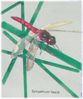
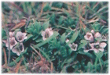
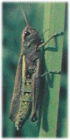
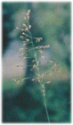
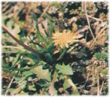
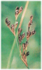

|
D'après le panneau installé par le
CONSERVATOIRE des ESPACES et PAYSAGES
D'AUVERGNE près de
la source du Chaudron.
|
LES SOURCES DE BARD
Connues et fréquentées depuis plus
de 2 000 ans les sources de Bard font partie des très
rares sources salées d'Auvergne qui accueillent une
flore et une flore normalement rencontrées en bord de
mer.
Une autre source salée en Auvergne :
les Saladis
|

Sympétrum fascié
|
|
Du sel venu des
profondeurs
Au terme d'un voyage de quelques dizaines
d'années dans les profondeurs de la Terre, l'eau de
pluie revient minéralisée en surface. Les
sources minérales de Bard, particulièrement
chargées en sel (chlorure de sodium) constituent l'un
de ces exceptionnels petits îlots maritimes de notre
région.
|

Glaux maritime
|

Criquet ensanglanté
|
|

Puccinelle à épis distants
|
Des plantes et des insectes
plutôt marins
Les écoulements des sources
minérales de Bard créent un milieu de vie
salé où seuls des êtres vivants
adaptés peuvent se développer.
Bard accueille en particulier une plante
halophile(halo = sel, phile = qui aime) d'une très
grande rareté : le pissenlit de Bessarabie (4
stations seulement en France, toutes en Auvergne). On
rencontre aussi le Glaux maritime, le Jonc de Gérard
et la Puccinelle à épis distants. Ces plantes
très rares sont protégées par La Loi.

Pissenlit de Bessarabie
|
La faune halophile associée à cette
végétation particulière est très
discrète. Il s'agit de criquets, libellules et
coléoptères spécifiques.

Jonc de Gérard
|